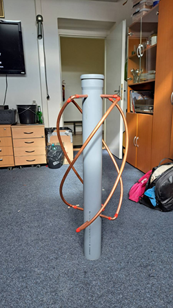

Why would you want to build such an antenna?
When receiving APT/LRPT transmissions, you need to point the antenna towards the satellite flying
above, the QFH antenna works from all sides, so you can just set it up anywhere and start receiving.
Everything you need for a simple receiving setup has been covered in this guide.
If you are looking for a guide, scroll to the end where I list the guides I used. This is just a write-up of
what we did.
First mission was to go and buy everything that we needed:
1m 110mm drain pipe
2m 15mm hard copper tubing
5m 10mm soft copper tubing
8x 90°copper tube elbows
5m RG58 coax
LG TV running NetCast (older than 2015) NOT webOS
You can use this guide for rooting WebOS based TVs
After spending about 50€ in materials, we went to the workshop to start
building the antenna.
First step is relatively easy if you are not stupid (we are), just drill a few
holes in the drain pipe and cut the hard tube according to guide #1.
The pipe bending step in Instruction #1 seemed too complicated and
required building a bending jig out of scrap wood. Instead, we used our
2 combined brain cells to calculate the required radius of the pipe, then
bent it by hand and adjusted it into a spiral until it looked good.
And it
did look good until I realized we were bending it the wrong way, so I
had to bend it again and now it looks much worse.
Now came the most painful part of the building process, which was
wiring the inside of the antenna, which was difficult because there was
very little room to work with inside the pipe.
The last step was to wire the antenna connector and it was done.
It works!
I would like to thank Al_Dorado for a nice guide
